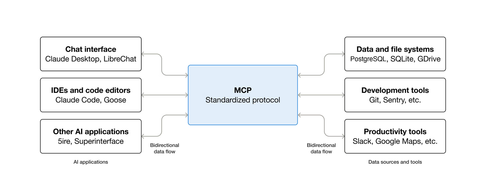
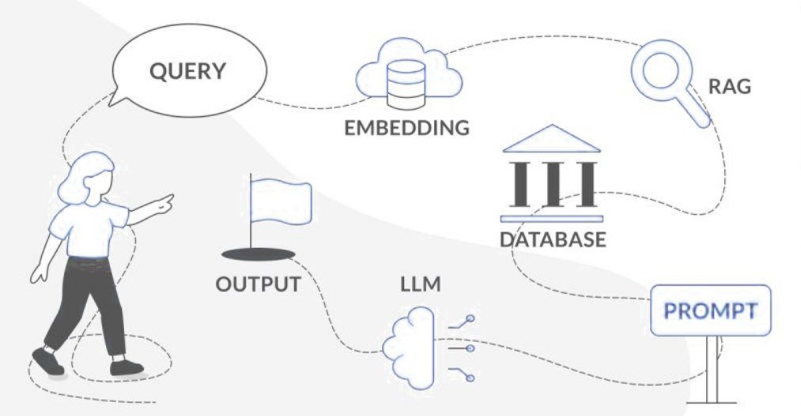
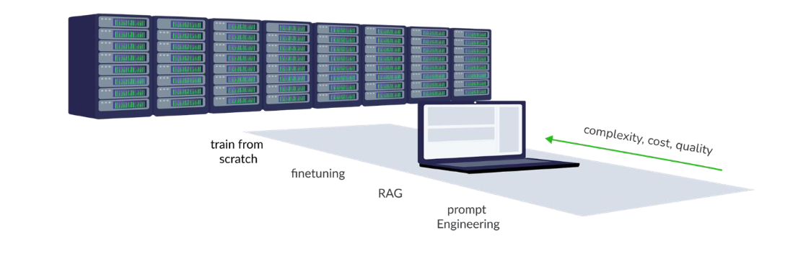
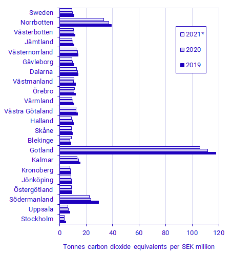
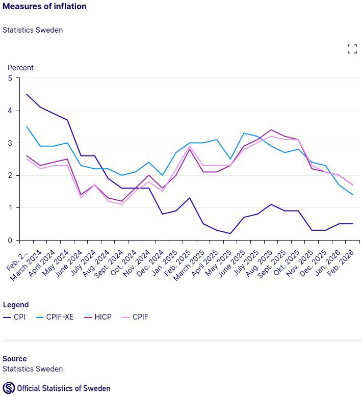

Hackathons by Sweden AI Factory¶
Intro
25 March 2026: Agentic AI with Swedish public data¶
Prerequisites
You are registered with the event
You have dabbled with AI agents or are curious about it
The task will be to create “research agents” using Mimer and open weight models that can answer questions using Sweden’s public data (from SCB and Riksbanken). You are of course free to use your favourite coding agent/IDE of choice.
Schedule¶
17:15 |
Doors open + mingle |
18:00 |
Introduction to Mimer and the hackathon task. The task will be to create “research agents” using Mimer and open weight models that can answer questions using Sweden’s public data (e.g. SCB). |
18:30 |
Hackathon begins |
19:55 |
Wrap-up presentations and demos |
|
|
20:30 |
Home time |
Important
{kind=link}
Before leaving the RISE offices, please remember to scan your badge in the device shown here.
You can then return the orange tag at the reception.
Instructions¶
Setup¶
TLDR; The Endpoints
While we provide instructions below for several tools (npm, uv, opencode etc.). If you are in a hurry, here are the information about the inference and MCP endpoints
for your reference.
Endpoint for the model: http://mimer-aif-hackathon.icedc.se/v1
Endpoint for Riksbanken MCP: http://mimer-aif-hackathon.icedc.se/swemo/sse
Endpoint for SCB/Statistics Sweden MCP: http://mimer-aif-hackathon.icedc.se/scb/mcp
We have also added a skills repo for the SCB MCP available here: https://github.com/ashwinvis/scb-opendata-skills
In this hackathon, we execute MistralAI’s Devstral 2 Small (256K, 24B) in H100 GPUs, served through multiple instances of vLLM. The model was chosen as it fits consumer hardware and therefore can simulating a home development for those who never did it.
Recommended Tools¶
The following tools are often useful for either installing MCP servers or building the final application for your hackathon.
Node.js via
npmandnpxcommands: Follow instructions at https://nodejs.org/en/downloadPython via
uvanduvxcommands: Follow instructions at https://docs.astral.sh/uv/getting-started/installation/(Optional, but convenient to have) Git for cloning skill repositories instead of downloading. We use
git clonecommand in instructions below. Follow instructions at https://git-scm.com/ to getgit.
Note on virtual environments
We have prepared a guide on Python and use of virtual environments if you are unfamiliar with it.
Standard installation with open-weights LLM from Mimer¶
For this Hackathon, we support the usage of OpenCode as it is a free and opensource tool that do not require any third-party account. If you want to use other tools (Claude Code, Mistral Vibe, etc), you can directly refer to their documentation and configuration of custom endpoints.
Important
Please notice that while there are instructions for Windows, we strongly support using Windows Subsystem for Linux (see WSL in the next tab) as the development environment is more robust and secure (i.e., it is easier to administrate Python environments).
Download the OpenCode at its official download webpage.
Open OpenCode once, and close it.
On Windows Explorer, open
%USERPROFILE%\.config\opencodeCreate a file named
opencode.jsonc, and insert the JSON configuration given below, replacing the entire content, if the file was not empty:Now reopen OpenCode.
In your terminal, download OpenCode by running[1]
curl -fsSL https://opencode.ai/install | bash
Run
opencode, and then typeexitand hit Enter.Execute the following to prepare the configuration file
mkdir -p ~/.config/opencode/
cd ~/.config/opencode/
touch opencode.jsonc
Then use your favourite text editor to replace the contents of
opencode.jsonc, with the JSON configuration given below.Run
opencodeand start using it!
(Optional): you can also run opencode web --port 4096 --hostname 0.0.0.0 and start a web instance of it in your browser,
which will then be available on http://localhost:4096.
OpenCode JSON configuration
{
"$schema": "https://opencode.ai/config.json",
"provider": {
"mimer": {
"npm": "@ai-sdk/openai-compatible",
"name": "Mimer AI",
"options": {
"baseURL": "http://mimer-aif-hackathon.icedc.se/v1"
},
"models": {
"mistralai/Devstral-Small-2-24B-Instruct-2512": {
"name": "Devstral 2 Small (256k)",
"limit": {
"context": 262144,
"output": 262144
}
},
}
}
},
"model": "mistralai/Devstral-Small-2-24B-Instruct-2512",
"mcp": {
"scb_opendata_mcp": {
"type": "remote",
"url": "http://mimer-aif-hackathon.icedc.se/scb/mcp",
"enabled": true
},
"swemo-mcp": {
"type": "remote",
"url": "http://mimer-aif-hackathon.icedc.se/swemo/sse",
"enabled": true
}
}
}
Use Ctrl+P to access menus and switch the models and/or the MCPs. You can also use slash commands like /models and /mcps. You should now be able to select the model (Devstral 2 Small (256k)).
Skills¶
Agent skills can be added by running the commands:
Launch Git bash from the start menu. It should look like this. Then run the following commands.
{kind=link}
$ mkdir -p $USERPROFILE/.config/opencode/skills
$ git clone https://github.com/ashwinvis/scb-opendata-skills
$ cp -r scb-opendata-skills/skills/* $USERPROFILE/.config/opencode/skills/
$ mkdir -p ~/.config/opencode/skills
$ git clone https://github.com/ashwinvis/scb-opendata-skills
$ cp -r scb-opendata-skills/skills/* ~/.config/opencode/skills/
Happy coding 🥳!
Fallback installation with bring-your-own LLM provider¶
Important
If you managed to install using the instructions in the section Standard installation with open-weights LLM from Mimer, you can skip this section.
For illustrative purposes we show how to locally install MCP servers and agent skills in the following agentic harnesses: OpenCode, Mistral Vibe and Claude Code.
Prerequisites
Here we assume that you have
installed the agentic harness of your choice, and
connected or authenticated to an LLM that you have access to (in OpenCode using
/connect, in Mistral Vibe withvibe --setupand in Claude Code using/login).
Local MCP servers are configured by editing the
global configuration ~/.config/opencode/opencode.jsonc:
Tip
For a local configuration use a directory .opencode in your current path instead of ~/.config/opencode
{
"$schema": "https://opencode.ai/config.json",
// Other settings ...
"mcp": {
"scb_opendata_mcp": {
"type": "local",
"command": ["uvx", "scb_opendata_mcp", "--transport", "stdio"],
"enabled": true
},
"swemo-mcp": {
"type": "local",
"command": ["uvx", "--with", "mcp==1.6.0", "swemo-mcp"],
"enabled": true
}
}
}
and skills can be added by running the commands:
$ mkdir -p ~/.config/opencode/skills
$ git clone https://github.com/ashwinvis/scb-opendata-skills
$ cp -r scb-opendata-skills/skills/* ~/.config/opencode/skills/ # Global configuration
Local MCP servers
are configured by editing the global configuration ~/.vibe/config.toml:
Tip
For a custom agent configuration use a file say ~/.vibe/agents/mimer.toml instead of the above, and later open with
vibe --agent mimer
[[mcp_servers]]
name = "scb_opendata_mcp"
transport = "stdio"
commmand = "uvx"
args = ["scb_opendata_mcp", "--transport", "stdio"],
[[mcp_servers]]
name = "swemo-mcp"
transport = "stdio"
command = "uvx"
args = ["--with", "mcp==1.6.0", "swemo-mcp"],
and skills can be added by running the commands:
$ mkdir -p ~/.vibe/skills
$ git clone https://github.com/ashwinvis/scb-opendata-skills
$ cp -r scb-opendata-skills/skills/* ~/.vibe/skills/ # Global configuration
Tip
If you are using a custom agent configuration say ~/.vibe/agents/mimer.toml, instead of copying with cp -r, you can also let skills be discovered:
skill_paths = ["/path/to/cloned/repo/scb-opendata-skills/skills/"]
enabled_skills = ["scb-*"]
Local MCP servers are configured by executing:
$ claude mcp add --scope user --transport stdio scb_opendata_mcp -- uvx scb_opendata_mcp --transport stdio
$ claude mcp add --scope user --transport stdio swemo-mcp -- uvx --with mcp==1.6.0 swemo-mcp
and skills can be added by running the commands:
$ mkdir -p ~/.claude/skills
$ git clone https://github.com/ashwinvis/scb-opendata-skills
$ cp -r scb-opendata-skills/skills/* ~/.claude/skills/ # Global configuration
Introduction¶
Questions
What are LLMs and how do they work?
What is agentic AI and how does it differ from traditional AI?
How do you manage context and use MCPs in agentic systems?
What are the differences between RAG and fine-tuning?
Large Language Models (LLMs)¶
Large Language Models (LLMs) are AI systems trained on vast amounts of text data to understand and generate human-like language. They excel at tasks like text completion, translation, summarization, and question-answering. LLMs leverage deep learning techniques, particularly transformer architectures, to process and generate coherent and contextually relevant text.
In this hackathon, we will be focusing on the question-answering, code generation and tool-calling capabilities of LLMs.
Agentic AI¶
Agentic AI refers to systems that can autonomously perform tasks, make decisions, and interact with their environment to achieve specific goals.
One way of designing an “agentic workflow” would be to repurpose coding agent harnesses. Coding agents are conversational AI models with access to tools such as reading/writing files, web search, and invoking shell commands. They live either in the IDE or in standalone command-line or GUI tools. This means they can be made highly autonomous through tool-calling or MCPs, enabling a wide variety of use cases.

Example of using agentic AI for coding. Source: CodeRefinery lesson on Responsible Use of Generative AI in Assisted Coding
With great power comes great responsibility. Oversee each step of your agentic development and try to manually allow when tools are suggested by the agent harness to execute.
See also
Agentic AI Foundation (AAIF), a Linux Foundation project
Context and domain knowledge¶
Managing context is one way to add domain knowledge. It involves adding relevant information to ensure coherent and meaningful interactions.
MCP¶
MCPs (Model Context Protocol) is an open-source standard for connecting AI applications to external systems. It enables AI applications to access data sources, tools, and workflows, enhancing their capabilities and allowing them to perform tasks more effectively. It can be though of as a opinionated REST API for AI applications.

Schematic of an MCP server. Source: What is the Model Context Protocol (MCP)? - Model Context Protocol
Today, we will only use MCP servers as read-only or query tools to replace the need for a RAG system. However there are other MCP primitives with which one can prepare reusable and few shot prompts templates and do so much more.
See also
Other approaches with RAG and Fine-Tuning¶

Schematic of RAG. Source: LLMs on Supercomputers, AI Factory Austria
Retrieval-Augmented Generation (RAG) combines the strengths of retrieval-based and generative models, allowing systems to fetch relevant information from a knowledge base and generate responses based on that data. A RAG system can be thought of as an LLM model interacting with a fuzzy search engine in the “embedding space”.
In comparison, MCP offers an alternative approach to RAG to carefully pass the context to the LLM, adding ability to add guardrails and validations.

How can you influence the output of LLMs?
Fine-tuning, on the other hand, involves training a pre-trained model on a specific dataset to adapt it to a particular task or domain. While RAG is flexible and can handle dynamic information, fine-tuning provides more specialized and optimized performance for specific tasks. Based on your needs, the choice between RAG / MCP and fine-tuning depends on the nature of your data, the specific requirements of your application and the compute available.
Skills¶
Skills are a lightweight, open format for extending AI agent capabilities with specialized knowledge and workflows. They allow agents to load procedural knowledge and context on demand, enabling them to perform tasks more accurately and efficiently. Skills are defined in a SKILL.md file and can include instructions, scripts, and resources.
Context management¶
If there is one thing you should remember, it would be to take care of your context window.
A drawback of RAG and MCP is that you need a context window upwards of 32k tokens. This is due to the additional overhead of system prompts and tool description, which is hidden in plain sight. During the hackathon these commands within OpenCode (or equivalent) will turn out to be useful:
/clear- Clears the context window. The most basic control, coding agents support clearing the context window (starting a new conversation), which you should do for unrelated queries./compact- Compaction. To enable conversations of unbounded length, coding agents support context compaction: if the conversation history grows too long, they will automatically call an LLM to summarize the prefix of the conversation, and replace the conversation history with the summary. Some agents give control to the user to invoke compaction when desired.
See also
Summary¶
This hackathon aims to inspire you on how to use agentic AI for your own internal data and get reasonably correct answers. We showcase the capabilities of:
open-weight LLM models
MCP
Skills
to demonstrate the potential of sovereign AI. If you learned something new, that’s a bonus! Our goal is to empower you with the knowledge and tools to leverage agentic AI effectively.
Keypoints
Your data, your rules: Use this as inspiration to make use of agentic AI to harness your internal data.
Sovereign AI: Explore the potential of open-weight LLM models.
Spreading the word: Expand your skills and knowledge in AI.
Challenge 1: Regional Emission Intensity Analysis¶
Objectives
You have access to the Statistics Sweden (SCB) data through the MCP server. You can query environmental and economic data using the scb_* tools. The goal is to analyze and compare emission intensity across Swedish regions.
Use case¶
Challenge
Calculate and compare the gross emission intensity (tonnes of CO2 equivalents per million SEK of economic output) for at least 3 Swedish regions (e.g., Stockholm, Gotland, Norrbotten) for the years 2019-2021.
Important
Example workflow
Start by searching for tables showing emission data and econonic profile by region.
Compute emission intensity using the formula:
Intensity = Emissions (tonnes) / GRDP (million SEK) * 1000for the years 2019-2021.
Ground truth: SCB report: Regional greenhouse gas emissions are increasing

The required tables can be easily retrieved using the search function in the MCP server. However just in case if you get stuck, here is a hint:
Hint
The following tables to use
Emissions data: Retrieve air emissions by region and substance (GHG in tonnes CO2 equivalents) from table TAB4357
Economic data: Retrieve Gross Regional Domestic Product (GRDP) by region from table TAB3138
Futher improvements¶
Optional Challenges
Interactive Visualization: Create an interactive plot showing emission intensity trends over time for multiple regions.
Tip
Extended Analysis: Extend the analysis to include more years (e.g., 2015-2023) or more regions to identify longer-term trends and regional patterns.
Map Visualization: Create a map visualization to show the distribution of emissions across different regions.
Tip
Instruct which library to use:
Generate a Python library like ipyleaflet or Folium
Generate Javascript app which uses leaflet.js
For data handling, SCB returns JSON-stat responses which can be processed using:
Python: pyjstat
JavaScript: jsonstat-toolkit
Challenge 2: Inflation Measures Analysis¶
Objectives
You have access to the
Statistics Sweden (SCB) data through the
scb-opendata-mcpserver. You can query economic data using the scb_* tools.Rikskbanken data through the
swemo-mcpfor CPI, CPIF, GDP, and other economic indicators.
The goal is to analyze and compare different inflation measures in Sweden.
Use case¶
Challenge
Retrieve and compare the following inflation measures for Sweden for the years 2020-2025:
CPI (Consumer Price Index)
CPIF (Consumer Price Index with fixed interest rate)
CPIF-XE (CPIF excluding energy products)
HICP (Harmonized Index of Consumer Prices)
Calculate the annual inflation rate for each measure and visualize the trends.
Important
Example workflow
Start by searching for tables showing the different inflation measures.
Retrieve the monthly or annual data for the specified measures. Aggregate them if needed.
Ground truth: SCB report: Different measures of inflation

Further improvements¶
Optional Challenges
Interactive Visualization: Create an interactive plot showing the trends of different inflation measures over time.
Tip
Instruct which library to use:
Generate a Python app which uses libraries like Plotly, Matplotlib, Gradio, Streamlit, Holoviz, Altair, Seaborn, or Bokeh
Use Javascript (either front-end only or full-stack) app which uses D3.js, Chart.js, Vega-Lite, Observable Plot, or Pico.css
For data handling, SCB returns JSON-stat responses which can be processed using:
Python: pyjstat
JavaScript: jsonstat-toolkit
Extended Analysis: Extend the analysis to include more years (e.g., 2010-2025) to identify longer-term trends.
Correlation Analysis: Analyze the correlation between different inflation measures and the GDP (Gross Domestic Product).
Tip
Instruct which library to use:
Generate a Python app which uses libraries like Pandas, NumPy, Scipy, Seaborn etc.
Challenge 3: Electricity Production and Use Analysis¶
Objectives
You have access to the Statistics Sweden (SCB) data through the MCP server. You can query energy data using the scb_* tools. The goal is to analyze and compare electricity production and use in Sweden.
Use case¶
Challenge
Retrieve and analyze the electricity supply and use data for Sweden for the years 2010-2024. Focus on the following aspects:
Total production by energy source (Hydro power, Wind power, Solar, Nuclear power, etc.)
Production and use (including exports).
Total use by sector (Manufacturing industries, Services, Agriculture, Households, Exports)
Calculate the percentage contribution of each energy source to the total production and visualize the trends.
Important
Example workflow
Start by searching for tables showing electricity supply and use data.
Ground truth: SCB report: Electricity supply and use 2001–2024 (GWh)
The required tables can be easily retrieved using the search function in the MCP server. However, just in case you get stuck, here is a hint:
Hint
The following tables to use:
Electricity supply use data: Retrieve from table TAB1010
Electricity use data: Retrieve from table TAB991
Further improvements¶
Optional Challenges
Interactive Visualization: Create an interactive plot showing the trends of electricity production and use over time.
Tip
Instruct which library to use:
Generate a Python app which uses libraries like Plotly, Matplotlib, Gradio, Streamlit, Holoviz, Altair, Seaborn, or Bokeh
Use Javascript (either front-end only or full-stack) app which uses D3.js, Chart.js, Vega-Lite, Observable Plot, or Pico.css
For data handling, SCB returns JSON-stat responses which can be processed using:
Python: pyjstat
JavaScript: jsonstat-toolkit
Renewable Energy Analysis: Analyze the contribution of renewable energy sources (Hydro power, Wind power, Solar) to the total production.
Price correlation: Compare against data for Electricity grid prices and electricity prices for households and non-households. What is driving this trend? Productions vs use or exports?
Tip
Use multiple charts to make a mini investigation. You can choose to compile it into a report or a slidedeck. You can use tools like Pandoc to generate a PDF or Reveal.js to make a presentation.
Wrap up¶
We start at 20:00: 19:55 (NEW TIME!) with the wrap up and demos.
Objectives
Each team presents for 5 minutes sharing their hack.
Questions
Some suggested questions to present:
Did you find something interesting or unexpected from the data through your hacks?
Are there any thoughts on your experience with this workflow?
Feedback¶
Scan the QR code above or answer below in our feedback survey. Your input is valuable, so please take your time to add your comments.
Link to the form: https://nextcloud.naiss.se/apps/forms/embed/yTbF8DbbFNM7sCCXCgMTSGNp
Quick Reference¶
Python and use of virtual environments¶
During the course of the hackathons you might need Python tools or develop your own application. For security reasons and to leave your system libraries unaffected, we always recommend you develop your demo apps inside a Python virtual environment, as it often wants to install libraries and execute code. Given below are some pointers on how to do that.
The following commands show how to initialize a virtual environment named .venv,
install packages to it and run executables from it.
uv init
uv add <package>
uv run <executable>
You might have a working Python installation and you do not wish to use uv. If so,
py -m venv .venv
.venv\Scripts\activate
python -m pip install <package>
<executable>
Use deactivate to leave the environment.
You might have a working Python installation and you do not wish to use uv. If so,
python3 -m venv .venv
source .venv/bin/activate
python -m pip install <package>
<executable>
Use deactivate to leave the environment.
The <executable> can be python or even something provided by a package such as gradio.
Python scripts¶
A new way (PEP 723) of developing scripts without having to ensure dependencies is to add inline-script metadata which looks like this:
# /// script
# requires-python = ">=3.11"
# dependencies = [
# "pandas",
# "seaborn",
# ]
# ///
import pandas as pd
import seaborn as sns
...
No virtual environments are needed for such scripts to work.
This can be executed using uv run
command and pipx.
Instructor’s guide¶
Why we teach this lesson¶
Intended learning outcomes¶
Timing¶
Preparing exercises¶
e.g. what to do the day before to set up common repositories.
Other practical aspects¶
Interesting questions you might get¶
Typical pitfalls¶
See also¶
Credit
FIXME
Don’t forget to check out additional course materials from …
License
CC BY-SA for media and pedagogical material
Copyright © 2026 Sweden AI Factory. This material is released by Sweden AI Factory under the Creative Commons Attribution-ShareAlike 4.0 International (CC BY-SA 4.0).
Canonical URL: https://creativecommons.org/licenses/by-sa/4.0/
You are free to
Share — copy and redistribute the material in any medium or format for any purpose, even commercially.
Adapt — remix, transform, and build upon the material for any purpose, even commercially.
The licensor cannot revoke these freedoms as long as you follow the license terms.
Under the following terms
Attribution — You must give appropriate credit , provide a link to the license, and indicate if changes were made . You may do so in any reasonable manner, but not in any way that suggests the licensor endorses you or your use.
ShareAlike — If you remix, transform, or build upon the material, you must distribute your contributions under the same license as the original.
No additional restrictions — You may not apply legal terms or technological measures that legally restrict others from doing anything the license permits.
Notices
You do not have to comply with the license for elements of the material in the public domain or where your use is permitted by an applicable exception or limitation .
No warranties are given. The license may not give you all of the permissions necessary for your intended use. For example, other rights such as publicity, privacy, or moral rights may limit how you use the material.
This deed highlights only some of the key features and terms of the actual license. It is not a license and has no legal value. You should carefully review all of the terms and conditions of the actual license before using the licensed material.
MIT for source code and code snippets
MIT License
Copyright (c) 2026, Sweden AI Factory project, The contributors
Permission is hereby granted, free of charge, to any person obtaining a copy of this software and associated documentation files (the “Software”), to deal in the Software without restriction, including without limitation the rights to use, copy, modify, merge, publish, distribute, sublicense, and/or sell copies of the Software, and to permit persons to whom the Software is furnished to do so, subject to the following conditions:
The above copyright notice and this permission notice shall be included in all copies or substantial portions of the Software.
THE SOFTWARE IS PROVIDED “AS IS”, WITHOUT WARRANTY OF ANY KIND, EXPRESS OR IMPLIED, INCLUDING BUT NOT LIMITED TO THE WARRANTIES OF MERCHANTABILITY, FITNESS FOR A PARTICULAR PURPOSE AND NONINFRINGEMENT. IN NO EVENT SHALL THE AUTHORS OR COPYRIGHT HOLDERS BE LIABLE FOR ANY CLAIM, DAMAGES OR OTHER LIABILITY, WHETHER IN AN ACTION OF CONTRACT, TORT OR OTHERWISE, ARISING FROM, OUT OF OR IN CONNECTION WITH THE SOFTWARE OR THE USE OR OTHER DEALINGS IN THE SOFTWARE.